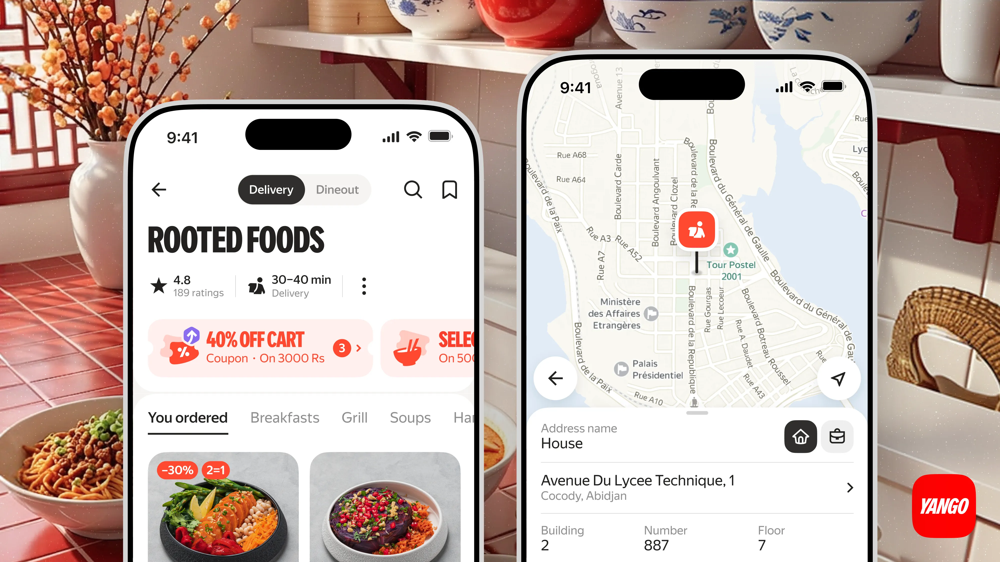
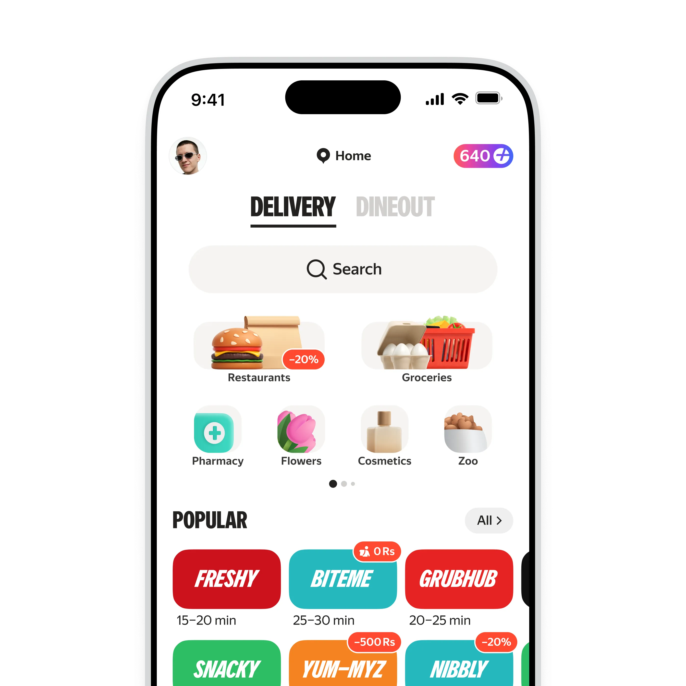
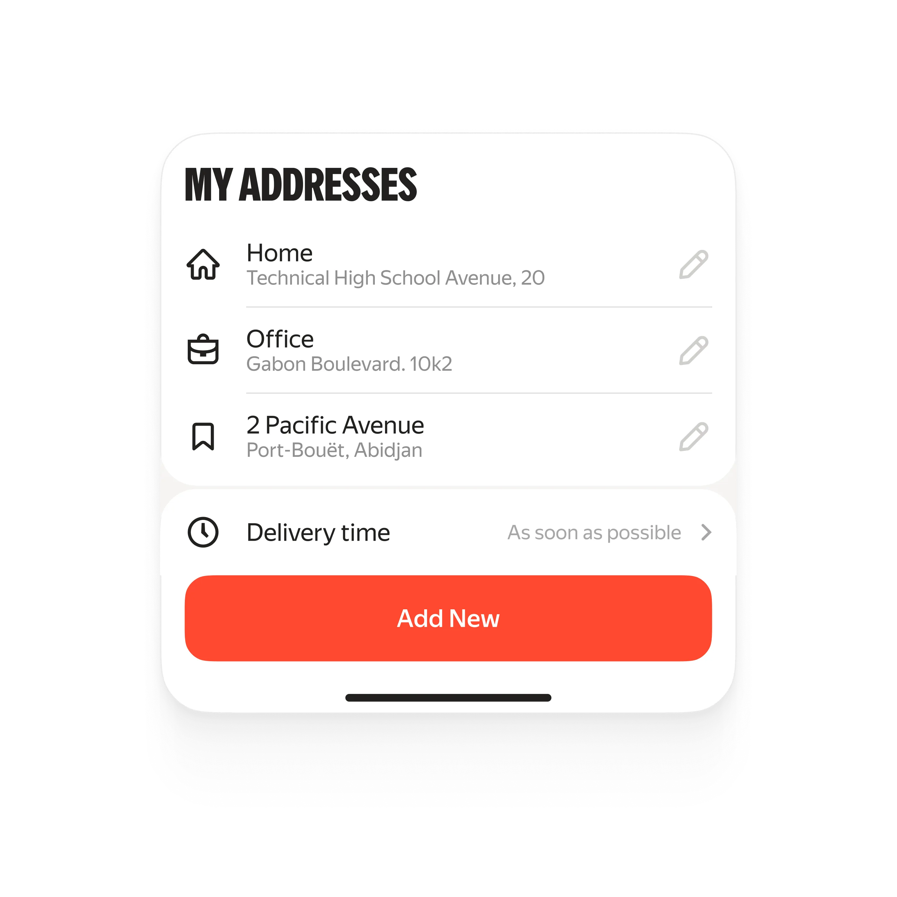
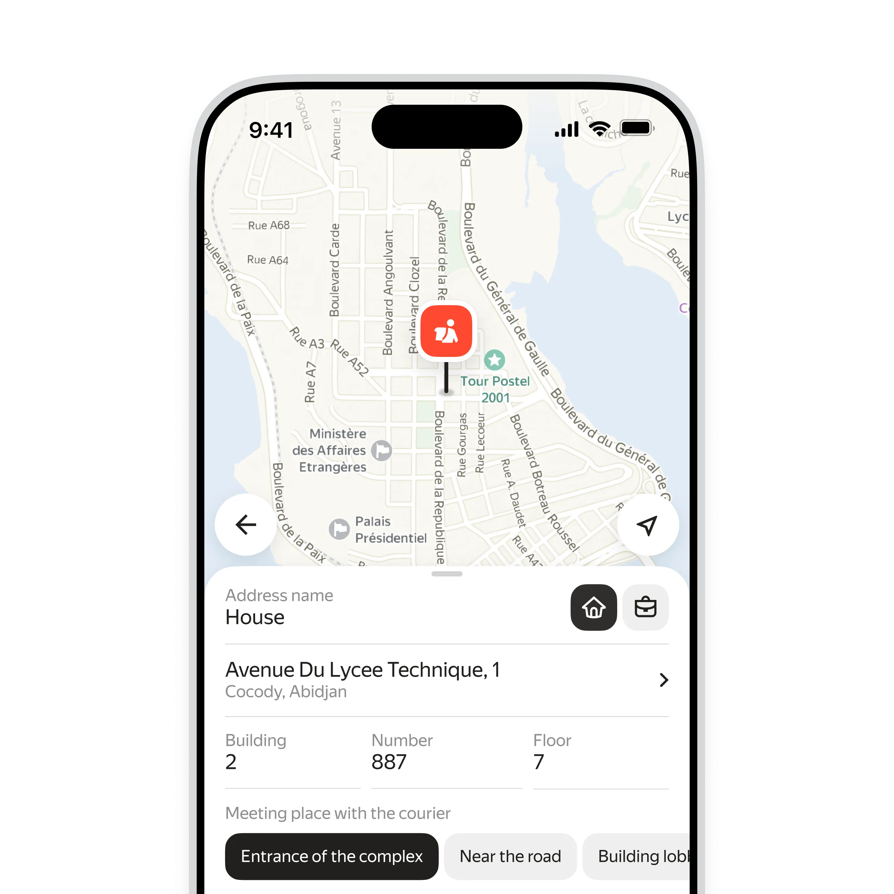
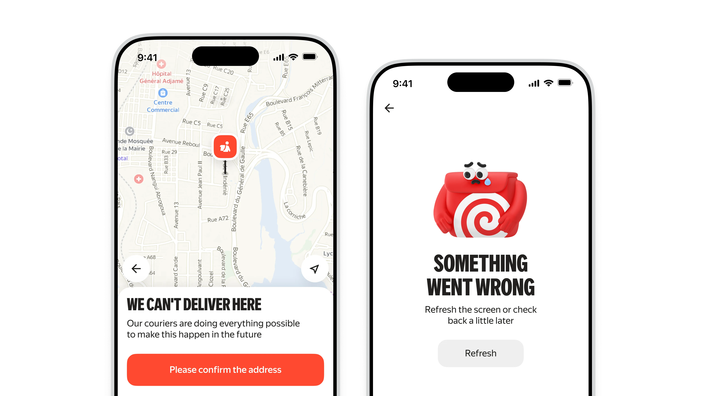
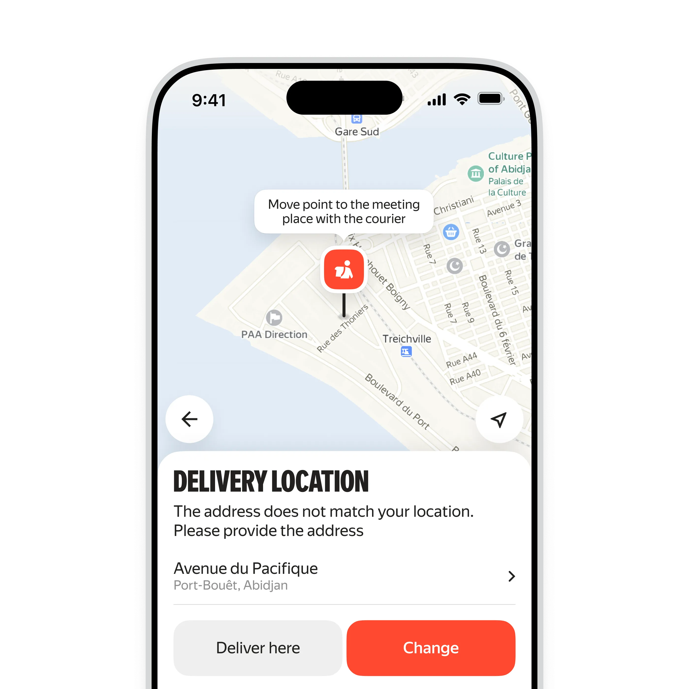
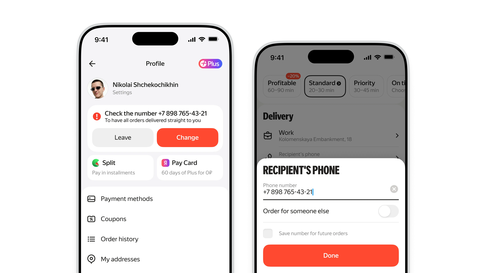
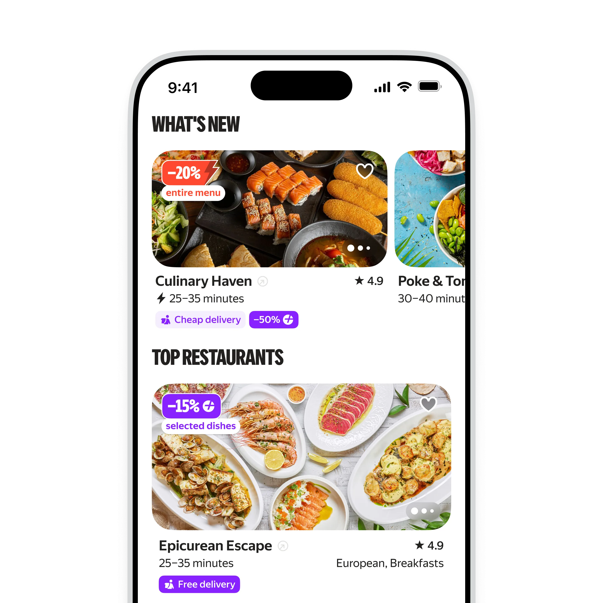
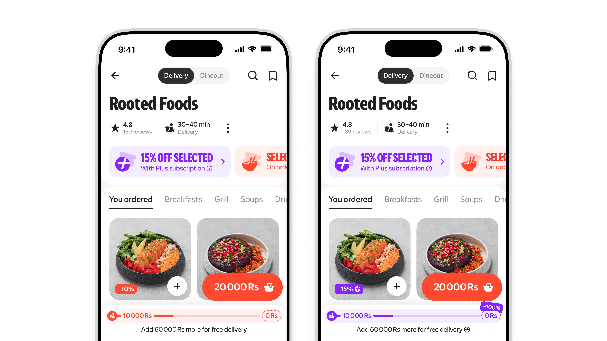

Международные механики
Growth and service mechanics for Yango Food's international markets — countries across Africa, Latin America, Asia, and the CIS. I designed coupon upgrades and deep discounts for Plus subscribers as tools for launching new countries, and fully reworked the address flow around the geographic and cultural specifics of each region. Separately — local payment methods and edge-case scenarios such as entering a tax ID

Addresses across countries
Failed deliveries weren't an interface problem — they came from the address model itself: in Abidjan a landmark matters more than a street, in La Paz a building may have no number, and in the CIS the familiar scheme works fine. To find the real patterns I ran about 30 user interviews, launched around 40 surveys with 100 respondents each, and initiated two studies with the UX lab

Saved addresses
I restructured the saved addresses modal: address types are now distinguishable, editing is available straight from the list, and delivery time and adding a new address live in one layer. People stopped losing their addresses and creating duplicates that later got picked by mistake

Choosing an address on the map
The pin on the map handles the point, and the form below it handles explaining that point to the courier. The set of fields and hints changes from country to country: somewhere a building number matters, somewhere a landmark and the entrance to the complex are enough. Suggestions come up contextually so nobody has to describe their location in words

Address search
Hints appear as you type, along with an offer to share your geolocation — it makes you easier for the courier to find. Every result comes with its district: identical street names in different districts of the same city are the norm in these markets, and that is exactly where orders used to get lost
Edge states
I worked separately on the scenarios where people used to hit a dead end: an address outside the delivery zone and a service failure during address lookup. Instead of an empty screen — an honest explanation of what is happening and one clear action. After that the cost of rejects went down across every international market

Mandatory address confirmation
If an address looks risky or drifts away from the geolocation, the flow stops: you have to confirm or change it before placing the order. It's a blunt instrument, so it's switched on selectively — only where the odds of a failed delivery are high. In those markets cancellations caused by addresses dropped by almost half

Proactive address check
A compact widget shows up at different points in the funnel and offers to confirm or fix the address while the order hasn't reached the courier yet. It doesn't block anyone, so it can run much wider than the blocking screen
The right phone number
The second reason for failed deliveries is unreachable customers. An outdated number is highlighted in the profile and at checkout, and it can be changed in one step, including after the order is placed. Couriers get through on the first call more often, and support gets fewer tickets

Better with a subscription
Subscription discounts stopped being a line of text in settings: they show up right in the restaurant feed as purple badges. A subscriber understands the benefit before opening the menu, and everyone else sees the exact amount they are leaving on the table

A carousel of deep discounts
The promo shelf is built around dishes rather than restaurants. You immediately see a specific dish with its subscription price next to the regular one. The bright purple block reads well in a dense feed and leads either to the restaurant or to the subscription
Subscriber and non-subscriber
Deep discounts and the delivery discount are shown differently to two audiences: a subscriber sees the final price and their progress towards free delivery, while everyone else sees how much cheaper the same order would be with a subscription. One screen covers two jobs at once: retaining subscribers and converting new ones
